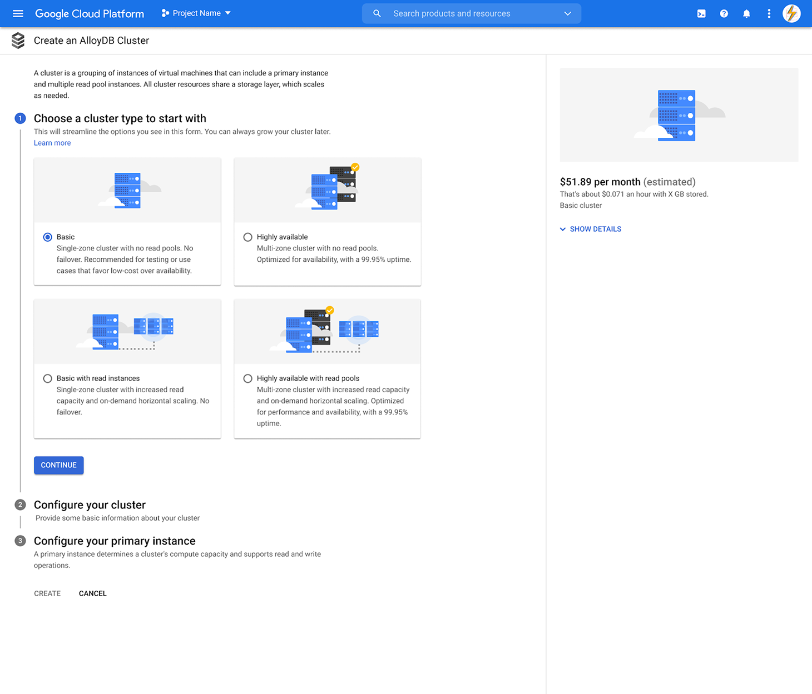
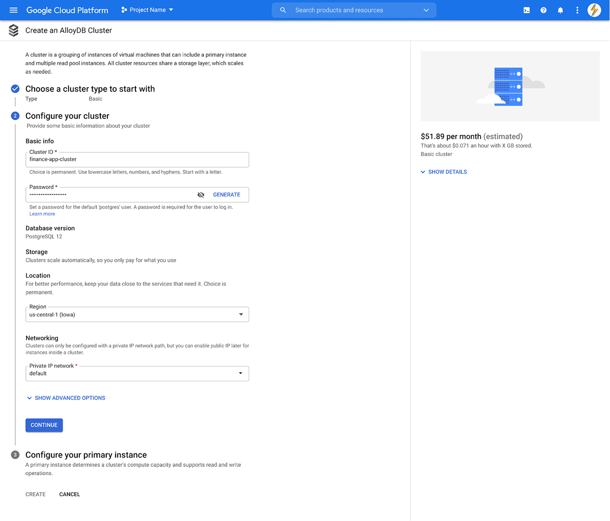
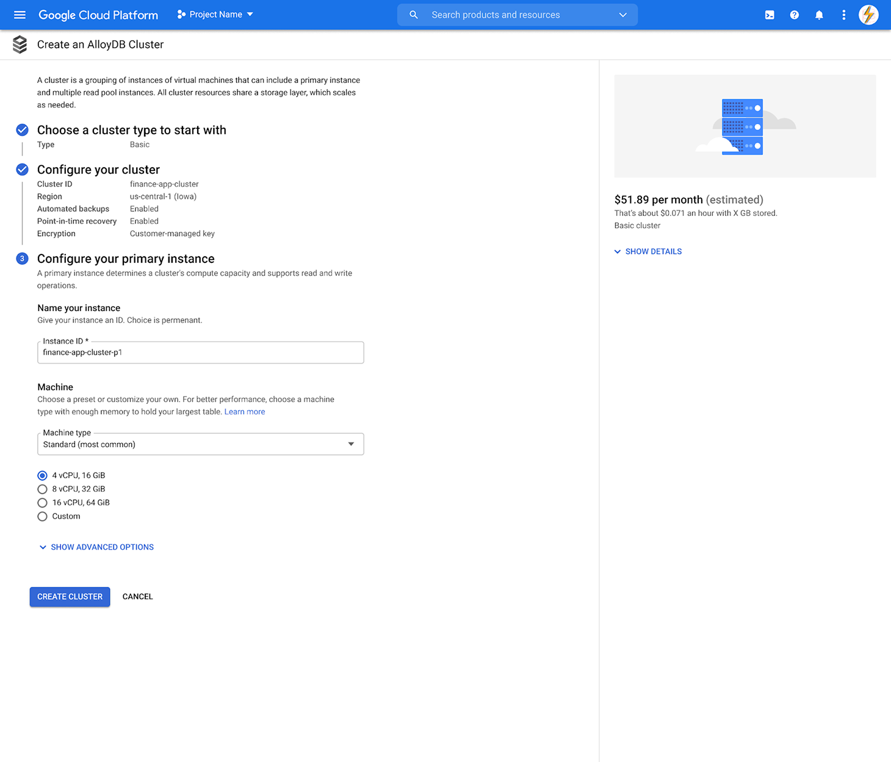
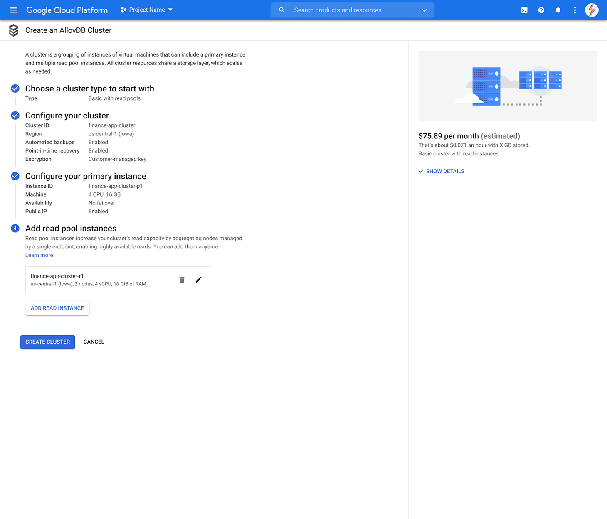
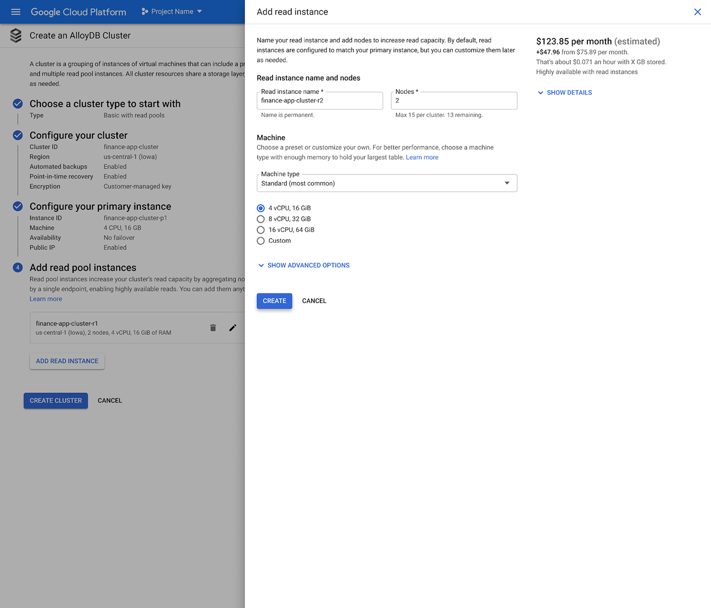
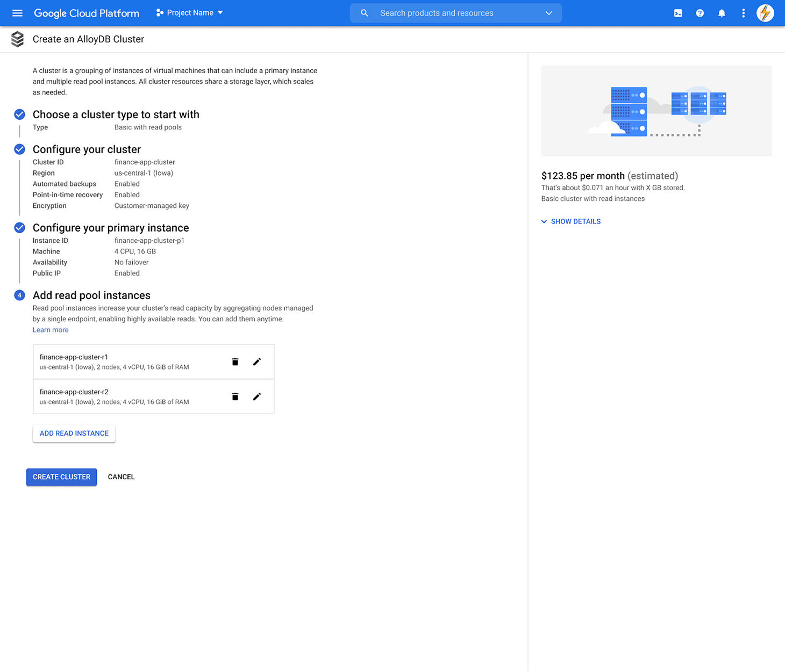
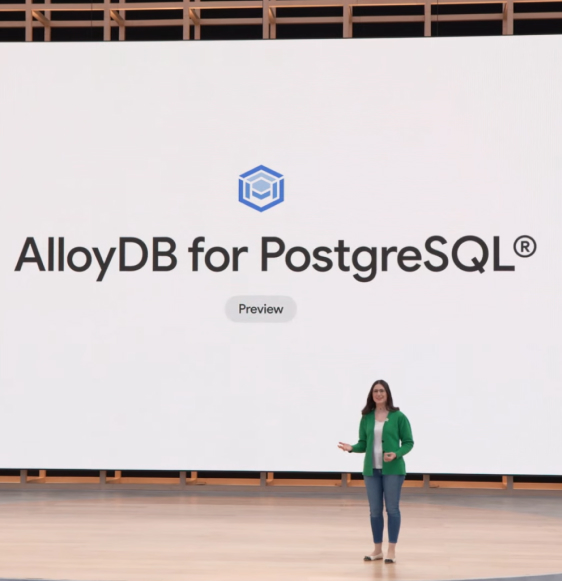

A zero-to-one product. And a new team.
New product launch. AlloyDB, Google Cloud's first new database product in a decade.
Design lead and manager for AlloyDB, alongside my existing role leading design on Cloud SQL.
Product strategy and team strategy affect each other. Get the balance right and both the team and the product win.
From concept to Google Cloud's fastest-growing database.
ARR reached within two years of launch
Customers adopted AlloyDB in the first two years
Launch a new database product and build the team behind it.
Google Cloud saw an opening in the high-performance relational database market. A new product with full open-source compatibility would let customers migrate off expensive incumbents for a fraction of the cost, at the same performance. I'd just come off launching a new database engine on Cloud SQL, which is what put me in the room to lead this one.
I was still managing and leading design for Cloud SQL which meant I couldn't take on AlloyDB alone. So while my main priority was designing the new product from the ground up, another was hiring a designer to share the load.
Two builds, running at once, on one clock.
Three priorities, one strategy.
With the scope set, I needed a strategy that could hit the ground running. Three priorities shaped everything that came after.
Focus on onboarding
A database product has a lot of surface area. With a constrained timeline and limited design capacity, I had to choose where the design's first contribution would land. I chose onboarding.
Onboarding for a cloud database is the resource creation flow, where a customer configures the database for their workload. It's the resource overview page, where they see what they've built and start to operate it. Getting those surfaces right mattered more than spreading across the full product. That focus shaped the scope of the differentiation work and gave my designer a clear piece of the product to own.

Bet on scale
A key benefit of AlloyDB is its flexible horizontal scaling capabilities, the ability to add more database servers to handle additional read traffic as it grows, rather than being limited to a single, larger machine. My hypothesis was that surfacing this capability during resource creation, letting customers configure it as part of setup rather than after, would set AlloyDB apart from the competition. Customers would see the full shape of what they were building before they built it.
That was specific enough to test, and it became the design hypothesis the rest of the work was built around.

Hire fast, build trust
I immediately recognized that I couldn't work on this product alone, while maintaining my additional responsibilities. I made the case for headcount, arguing that design capacity had to scale with engineering growth to maintain velocity. Leadership agreed.

Testing where we were heading
Every good design starts with insight, and insight takes research. I started with a competitive audit and heuristic evaluation, which confirmed that horizontal scaling wasn't part of the setup conversation on any other database. But a gap in the competition isn't proof of a good idea. We needed to test the concept with customers first, and that's what came next.

Low fidelity concepts
I created wireframes with horizontal scaling options surfaced as configuration templates during the create process, to see how customers would react.

Mixed reaction from users
Visible scaling options worked, but customization wasn't obvious.
Participants responded well to the streamlined flow. One technical lead said setting up the primary instance (the main database server) and the replica pools (additional servers for scaling) in one shot was a major improvement.
The templates worked as anchors, but not as starting points. Participants weren't sure whether they could create a cluster that didn't fit one of the templates, and editing wasn't intuitive.
There was a gap between what the templates promised and what customers felt permission to do with them. That became the question the next round of design had to answer.
Three directions. One decision.
The first test confirmed customers wanted scaling options at creation time. What it didn't settle was how those options should be presented. I designed three directions, each taking a different position on how visible the scaling decision should be. I put all three in front of customers to see which one read clearest.
Option 1 — Illustrative
A visual representation of the cluster's configuration, including its scaling options, surfaced upfront. Customers see what they're building before they build it.

Option 2 — Descriptive
Each configuration option laid out in plain text. Scaling is named and explained, but not visualized.

Option 3 — Hidden
The conventional pattern. Scaling options stay tucked behind the cluster creation step until the customer reaches them in sequence.

The three options were three positions on one question: how visible should the differentiator be, given that customers wanted scaling at creation time but didn't want to feel locked into a template? Option 3 was the safe choice. Option 1 was the risk.
What customers told us
The results came back clear. Option 1, the most visual of the three, was the direction customers responded to most.
Participants said it helped them understand AlloyDB's scaling capability before they'd configured anything. It introduced them to the idea of additional servers without burying that idea in form fields. The illustrations themselves were doing work, not just decorating the page. They were teaching.
The hypothesis was validated, and the more visible version of the bet was the one that worked. The version where the UI showed customers what they were building, instead of asking them to imagine it.
Align on principles, then execute
While the resource creation form work was underway, I was building something else: the team itself. I hired a designer for AlloyDB, and around the same time, hired a designer for Cloud SQL. With those two additions, my team grew from two to four.
We were no longer independent contributors focused on individual priorities. We were now a team of four who needed to be aligned on the principles that would drive everything we worked on going forward.
The first step was a workshop to align on shared values. By the end, everyone knew what they stood for individually, and where the team stood together. It echoed a room I'd worked in early in my career, on the Taco Bell project, where shared principles gave a team its foundation. Here, those principles gave each designer a foundation to launch their own work from.
For AlloyDB, that meant giving my new designer her first major assignment: the cluster overview page, the screen that would bookend the onboarding experience for new users.
The cuts that made the launch possible.
The cluster creation flow was designed, but not yet built. The overview page was still in progress, with my new designer leading it. Then the launch date landed: 4.5 months out.
A fixed date meant a fixed scope, and the backlog wasn't close to fitting it. I sat down with the senior PM and lead front-end engineer to work through the full list from first principles. What could engineering have ready in that window? What could the front-end build against? What could design actually execute, including the overview page still in flight? And underneath all of it: what was the minimum experience that still felt complete to a customer, not just a list of features that happened to fit?
Every journey on the list had to clear all four. What started as 67 core user journeys came down to 16, a 76% reduction. They were the ones that made AlloyDB a usable competitive product at launch.
Core user journeys narrowed to the set that still felt complete to a customer, and could ship in 4.5 months.
AlloyDB final designs
Resource creation form and the overview page.






V1, then I/O.
AlloyDB launched in private preview nine months after design got the assignment. From product idea to a working v1 in customers' hands. The cluster creation flow my team and I designed became the front door of the product.
Eight months after that, AlloyDB was announced on the Google I/O 2022 stage on May 12. Two distinct milestones, not one. The first was the proof the product could ship. The second was the proof Google was willing to put weight behind it.
AlloyDB went on to become the fastest-growing database on Google Cloud.
The differentiator held. Scaling-in-the-create-flow worked the way the research said it would.

If you're building a team that wants design leadership ready for what's next, let's talk.
Get in touch →